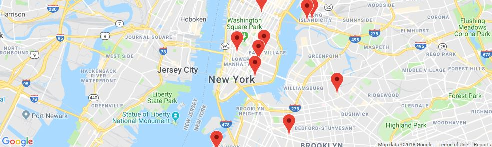

Your device appears to be
offline
. Certain features are unavailable while offline. All changes made while offline must be synced when you reconnect to a network.
Restaurant Reviews

Filter Results
Filter restaurants by neighborhood?
All Neighborhoods
Filter restaurants by Cuisine?
All Cuisines